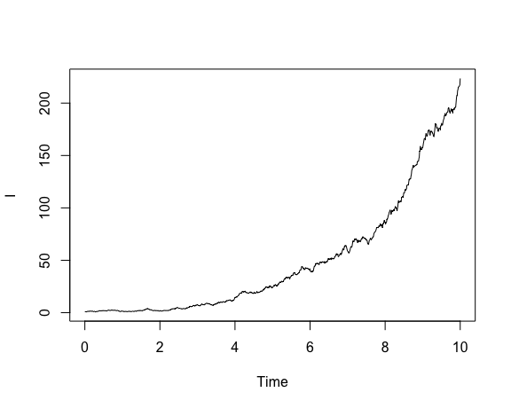
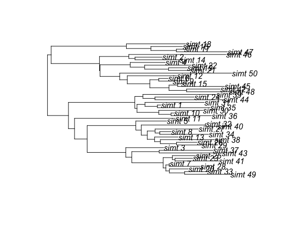

Simulate genealogies using exponential growth
Erik Volz
2024-10-08
Source:vignettes/phydynR.Rmd
phydynR.RmdIntroduction
In this tutorial we will use phydynR to simulate genealogies using the expontial growth and to inder birth and/or death rate.
Requirements
This tutorial assumes you have the following R packages already installed in your computer.
The epidemiological model
Let’s model a population which is growing exponentially with fixed per-capita birth rate beta and death rate gamma.
Once we’ve defined the model, we can simulate trajectories and then simulate genealogies if sampling lineages at specific times.
Finally, we will see how to infer birth and/or death rates if the tree is observed (e.g. reconstructed from genetic sequence data).
First, let’s define the rates:
# Define the birth rate
births <- c(I = 'parms$beta * I')
# Define the death rate
deaths <- c(I = 'parms$gamma * I')The rates are specified as a named vector of strings; names correspond to the
names of the demes (I in this case). The strings are interpreted as R expressions,
so should be written just as you would write other R code. The keyword parms
that appears in the rate equations is a list of parameters, which can be set as
we will see below.
Now build the demographic process like so:
dm <- build.demographic.process(births = births,
deaths = deaths,
parameterNames = c('beta', 'gamma'),
rcpp = FALSE,
sde = TRUE)Note the following:
- You must specify the names of parameters that appear in
parms; - The
sdeoption allows you to specify if the model is stochastic (stochastic differential equations) or deterministic (ordinary differential equations); - the
rcppoption says if the equations are written as R code or as C code; we used R code in this case.
Once the model is specified, we can simulate and visualize trajectories:
show.demographic.process( demo.model = dm,
theta = list( beta = 1.5, gamma = 1 ),
x0 = c( I = 1 ),
t0 = 0,
t1 = 10) 
The variables t0 and t1 determine the time limits of integration.
x0 provides a named vector of initial condition; note well that names must
correspond to those used to specify the rates. theta is a synonym for parms
and provides the parameter list.
You can also directly simulate the model using
dm(theta = list( beta = 1.5, gamma = 1 ),
x0 = c( I = 1) ,
t0 = 0,
t1 = 10,
res = 1000,
integrationMethod = 'adams')Here integrationMethod is based to the ODE solver and specifies which method to
use (e.g. euler or adams). res is the number of time steps to use; larger
values will be more accurate at expense of more computation.
We can alternatively specify the equations as C code, in which case the model
will be compiled using the Rcpp package. In this case, simulating the model will
be very fast, but it will take a few seconds to compile the model.
Let’s compile a deterministic version of the model:
dm.det <- build.demographic.process(births = c(I = 'beta * I'),
deaths = c(I = 'gamma * I'),
parameterNames=c('beta', 'gamma'),
rcpp = TRUE,
sde = FALSE)## [1] "Tue Oct 8 15:57:37 2024 Compiling model..."
## [1] "Tue Oct 8 15:57:41 2024 Model complete"Note that when we use C code, the parms keyword is not used.
Now let’s simulate a coalescent tree conditioning on this demographic process:
tre <- sim.co.tree( theta = list( beta = 1.5, gamma = 1 ),
demographic.process.model = dm.det,
x0 = c(I = 1 ),
t0 = 0,
sampleTimes = seq(10, 15, length.out = 50),
res = 1000) This is self-explanatory except for the sampleTimes argument, which is required.
This specifies the times relative to t0 that each lineage is sampled.
The length of this vector determines the sample size.
This can be a named vector, in which case the taxon labels are retained in
the returned tree. The returned tree is a DatedTree object which subclass
ape::phylo. So, most of the functions in the ape package will also work
with the simulated tree. Let’s plot it:

Finally, we will see how to compute a likelihood of parameters describing the
demographic process given the tree as data. The colik function can be used to
compute this likelihood, and model fitting can be done in a variety of ways.
A Bayesian analysis could be done using the mcmc package,
or maximum likelihood can be done using the bbmle package.
Note that this returns the log likelihood.
Here is an example invocation of the likelihood function using the simulated tree as data:
colik(tree = tre,
theta = list( beta = 1.5, gamma = 1),
demographic.process.model = dm.det,
x0 = c( I = 1 ),
t0 = -1,
res = 1e3,
timeOfOriginBoundaryCondition = FALSE)## [1] -216.1359Note the following options:
-
treis theDatedTreeobject that we fit to; -
x0is the initial conditions for the demographic process; -
t0is the time of origin of the process; you should choose a value that occurs before the root of the tree; -
resis the number of time steps used in the demographic process; -
timeOfOriginBoundaryCondition(defaultFALSE) : ifTRUE, the function returns-Infif the time of origin occurs before the root of the tree; -
AgtYboundaryCondition(defaultTRUE) : ifTRUE, the function returns-Infif the number of extant lineages in the tree is less than the simulated population size; this should usually be left asTRUE.
Fitting the model
We will fit the model using a maximum likelihood approach.
We will focus on estimating the transmission rate beta and the initial size for
\(I\). We will assume prior knowledge the death rate \(\gamma\).
First, create the objective function to be minimized:
obj_fun <- function(lnbeta, lniniI){
beta <- exp(lnbeta)
I0 <- exp(lniniI)
parms <- list(beta = beta,
I = I0,
gamma = 1,
t0 = -1)
mll <- -colik(tre,
theta = parms,
dm.det,
x0 = c(I = 1),
t0 = parms$t0,
res = 1000)
# track progress:
print(paste(mll, beta, I0))
mll
}Note that this uses log-transformation for variables that must be positive (like rates and population sizes).
We can then fit the model by running
fit <- mle2(obj_fun,
start = list(lnbeta = log(2), lniniI = log(1)),
method='Nelder-Mead',
optimizer='optim',
control = list(trace = 6, reltol = 1e-8))Note the following options:
-
startcontains the starting conditions for the parameters we would like to estimate; -
controlis a list of options foroptim; see?optimfor more information.
As this fit will take a little to run, we will load the results using
We can see the results by running
AIC(fit)## [1] 421.3335
logLik(fit)## 'log Lik.' -208.6667 (df=2)
#contains the parameter estimates
coef(fit)## lnbeta lniniI
## 0.3704748 0.3161767## lnbeta lniniI
## 1.448422 1.371873